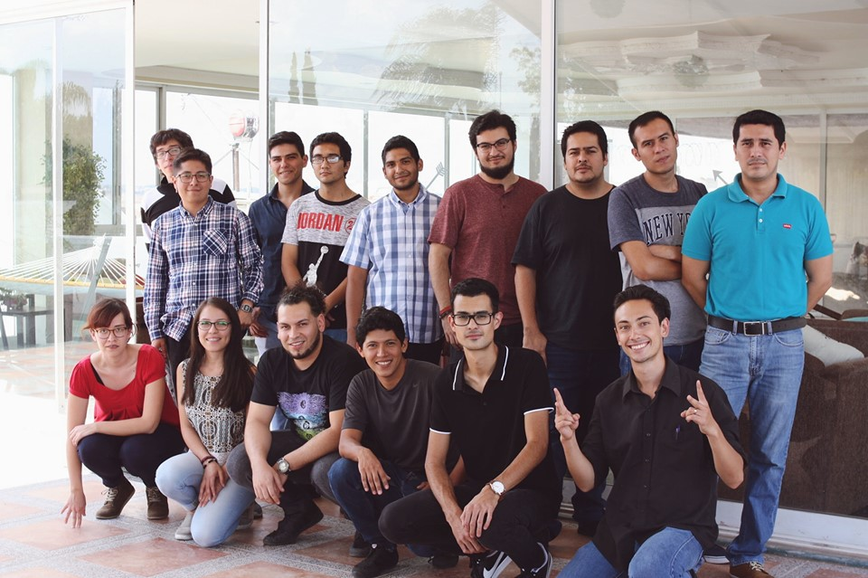

¿Quien es Blue Trail Software?
Blue Trail Software fue fundada hace una década en San Francisco,
California y ahora se encuentra entre las mejores empresas de México.
Entre sus clientes se cuentan Samsung, Ring, Call Potential, Bloom,
Legion, entre otras empresas estadounidenses que van desde startups
hasta líderes globales. Blue Trail Software es una empresa basada en
valores lo cual que permiten tener un ambiente relajado y de
colaboración, apoyo entre el equipo, el equipo de mantiene con
motivación y apasion con su trabajo
Blue Trail Software fue desarrollada por Rémi Vespa, un veterano de la
computación francés quien puso en marcha empresas exitosas en Europa
antes de asentarse en California en pleno boom de las empresas
puntocom para perseguir sus ambiciones empresariales. Luego conoció a
Rosalba Reynoso y juntos desarrollaron la compañía latinoamericana de
tecnología Blue Trail Software.
¿Como funciona un Intership?
Publicado 13-08-2019

El 8 de junio comenzó un sueño para estos 15 participantes que fueron
seleccionados para participar en este instership 2019. El objetivo
principal de este programa es capacitarlos para que se desempeñen como
desarrolladores FullStack.
Algunos orginarios de Ciudad de México, Colima, Sonora, Guadalajara y
Chihuhahua. Cada uno de ellos todos los días se esfuerza por aprender
y realizar cada uno de sus actividades.
Este programa tiene como duración 6 meses en los cuales los
participantes reciben clases todos los días en donde desarrollan
diferentes habilidades de programación y otras muchas un ejemplo de
ello es : Organización, Inglés, negociacion, diseño de proyecto etc.
Algunos ejemplos de los temas que se imparten durante el programa son:
JavaScript, Base de datos, HTML, CSS, Angular, QA entre muchos otros.
Un punto importante a resaltar es que cada uno de sus maestros son
personas que trabajan en la empresa y que comparten gran parte de su
conocimiento y experiencia dentro de
Blue Trail Software